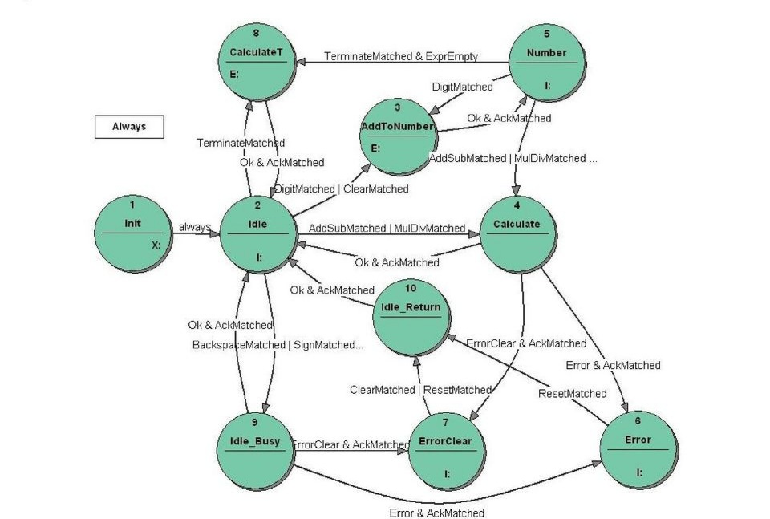

| Name | Id Number | |
|---|---|---|
| Sabbir Ahmed | 1912020104 | |
| Preetam Roy | 1912020091 | |
| Shanayaz Anjum Hashi | 1912020105 | |
| Israt Jahan Shotabdy | 1912020114 | |
| Shariya Sultana | 1912020094 |
First of all,we are grateful to Almighty for blessing us with sound health to complete this presentation. Secondly, we are grateful to our parents who stayed beside us in every moment of our life. We would like to give special thanks to our honorable teacher (ShafkatKibria) and our CSE department head (Arif Ahmed) who gave us the opportunity to do this project. We had to do some research to do this project which were very useful for us.
The name of our project is ‘Calculator’. Calculation is very important in our daily life. Calculator provides simple and advanced mathematical functions in a beautifully designed app. Perform basic calculations such as addition, subtraction, multiplication and division.
Calculators are a way of doing mathematical equations when used correctly. They are also a useful tool in learning mathematics. The use of calculators have only had part in the benefit of education, and with widespread availability, a full range of sizes, and a price range for any budget there .
The calculator has the following keys: 0, 1, 2, 3, 4, 5, 6, 7, 8, 9, +, -, *, /, %, =, C, AC, HTOD, OTOD, BTOD, DTOH, DTOO, DTOB and sqrt. In any situation the calculator has to produce a correct result defined by the well known arithmetic rules. If the calculations is impossible the calculator has to display information helping the user to resolve the erroneous situation, like: • On encountering a division by 0 the display should read "Cannot divide by 0" and typing the key “C” should reset the calculator. • On calculating the square root value of a negative operand the display should read "Wrong operand". • On erroneous operand or operation keys the display should read “Reset (C) to continue” or “Clear (AC) to continue” as appropriate. Of course, any situation can be cleared using the main reset key “C”.
Before we start to think about a calculator state machine we should make a design of the calculator control system. We may consider a calculator control as a system that reacts to keys performing all elementary actions. This approach is a dead end street leading to a very complex state machine that is difficult to handle. We will define another way that is based on the observation that a calculator is a builder of strings that are executed when complete. The rules for handling such a calculator system are fairly simple:
The task of the state machine will be to supervise the keys typed at any time. First, the state machine decides whether the entered key make sense in a given situation. If unexpected the key may be ignored or should produce an info on the display. If the key is expected the state machine should decide what to do at that moment. The decision is very coarse; its is not the task of the state machine to decide which arithmetic operation to do. Output Functions return a value that corresponds to the result and this value is used by the state machine as a control value to supervise the calculation process. the calculation process.
| Meaning | Keys | Object | Control value |
|---|---|---|---|
| Key change | - | Key | Key_CHANGED |
| Digit | 0-9 | Ofu_Parse | DigitMatched |
| Add | + | Ofu_Parse | AddMatched |
| Sub | - | Ofu_Parse | SubMatched |
| Mul | * | Ofu_Parse | MulMatched |
| Div | / | Ofu_Parse | DivMatched |
| Equals | = | Ofu_Parse | EqualsMatched |
| Percentage | % | Ofu_Parse | PercentageMatched |
| Clear | AC | Ofu_Parse | ClearMatched |
| Reset | C | Ofu_Parse | ResetMatched |
| Hexadecimal to Decimal | HTOD | Ofu_Parse | DecimalMatched |
| Octal to Decimal | OTOD | Ofu_Parse | DecimalMatched |
| Binary to Decimal | BTOD | Ofu_Parse | DecimalMatched |
| Decimal to Hexadecimal | DTOH | Ofu_Parse | HexadecimalMatched |
| Decimal to Octal | DTOO | Ofu_Parse | OctalMatched |
| Decimal to Binary | DTOB | Ofu_Parse | BinaryMatched |
| No key (empty) | - | Ofu_Parse | ACKMatched |
| Calculation ok | - | Ofu_Calculate | Ok |
| Calculation error | - | Ofu_Calculate | Error |
| Expression is empty | - | Ofu_Expression | ExpreEmty |
| Expression is not empty | - | Ofu_Expression | ExprNotEmty |
The key role in the state machine execution will play the object Key which change will trigger the function MatchKey via the Output Function Parse. This function will return the control value Key_CHANGED (see Table 1). Any key change will trigger an action that will also clear the key; this is necessary to allow a repetition of the same key. Clearing the key will generate another Key_CHANGED control value but this time the function Parse will return an acknowledgment signal AckMatched which actually means “the key is an empty string”. AckMatched plays an important role in a specification, being used to terminate transitions.
The Output names define the functions (see Table 2) that are to be called as Input-, Entry- or ExitActions. All objects used are strings; hence the functions are parsers analyzing strings and transforming them only locally to float numbers for calculations. The functions are called using Output Functions Parse and Calculate. Later we will add another Output Function called Expression. An Output Function gets a parameter (Output name) which defines the specific function to be called by the Output Function. So, for instance getting the parameter 7 the Output Function Calculate will carry out a specific function AddToNumber().
Typing a Digit key should activate a function AddToNumber that creates the operand. The function creates a string from the digits and a dot character. The string must have not more than one dot, no trailing zeros and a leading zero must be added if the first entered key is a dot.
| Function defined by Output name | OFUN | Parameter | |
|---|---|---|---|
| Triggered by +,-,*,/,= keys | MatchKey | Ofu_Parse | 1 |
| AddToNumber | Ofu_Calculate | 7 | |
| CalculateLast | Ofu_Calculate | 6 | |
| CalculateAll | Ofu_Calculate | 5 | |
| CalculateT | Ofu_Calculate | 10 | |
| Triggered by other keys | ChangeSign | Ofu_Calculate | 9 |
| DeleteLastDigit | Ofu_Calculate | 8 | |
| Calculate1Op | Ofu_Calculate | 12 | |
| Reset | Ofu_Calculate | 15 | |
| Clear | Ofu_Calculate | 13 | |
| Auxiliary | DisplayResetMsg | Ofu_Calculate | 4 |
| DisplayClearMsg | Ofu_Calculate | 3 | |
| ChangeOperation | Ofu_Calculate | 14 | |
| ClearDisplay | Ofu_Parse | 2 | |
| PrepareExpressionT | Ofu_Parse | 3 | |
| CheckExpression | Ofu_Expression | 1 |
The function that performs arithmetic operations: +, -, *, / is a more complex one. To start with, we define two such functions: CalculateAll and CalculateLast that are results of the following observations: clicking on a key that triggers an arithmetic operation (+, -, *, /, =) the function called gets a few possible strings that are illustrated by examples shown in Table 3. The strings that are at any time to be processed require maximum none, one or two operations, whereas +, -, = may trigger up to two operations and *, / may trigger max one operation. In principle, the function CalculateAll will be called if the keys +,-,= are used and the CalculateLast will be triggered by keys * or /. The other functions are straightforward ones like: ClearDisplay or ChangeSign; their names define quite well their simple functionality. Understanding the rules of operations that are to be carried out in the calculator we are able to start the specification of the calculator state machine that we have called Calculator.
| String | Calculation | Number of operations |
|---|---|---|
| 2.3+ | do nothing | none |
| 2.3+4.07* | do nothing | none |
| 2.3+4.07+ | add and continue with 6.37+ | One |
| 2.3+4.07= | add and terminate (result 6.37) | One |
| 2.3+4.07*2* | multiply and continue with 2.3+8,14* | One |
| 2.3+4.07*2+ | multiply and add and continue with 10.44+ | Two |
| 2.3+4.07*2= | multiply and add and terminate (result 10.44) | Two |
We begin with a simple calculator with functionality limited to the four arithmetic functions represented by the keys +,-,*,/. In next stages we shall expand it to a standard calculator corresponding more or less to the Windows one. But we improve on it, by adopting the normal operator precedence rules for arithmetic expressions, as in fact in the “scientific” mode of the Windows calculator. The projects should be opened in a StateWORKS development environment so as to see all the project details.
The state machine CalculatorSimple is shown in Figure 2. The calculation is triggered by a change of the object Key. As this event should trigger the state machine in any state we put it in the Always section (see Figure 3). The discussion below refers to the specification details in the document Calculator.xml (note that this document applies to the full Standard calculator). The Calculator has many Actions. Assuming that each action will be an Entry Action of a state the state machine will have a lot of states. Using the Mealy model we will as a rule need fewer states. We try to optimize the design using a mixed Mealy-Moore model. As a rule, the state machine is designed in such a way that an event triggers an Input Action in the present state and forces a transition to another state. The other state is a busy state whose function is to acknowledge the realization of the calculation function (see the discussion in the section “Parsing the key“). This acknowledgment is ANDed with the calculation result which determines the next done state. So, for instance if a digit key is entered (DigitMatched) in the state Init the Input Action ClearDisplay is performed and the state machine goes to the state AddToNumber where the Entry Action AddToNumber is performed. The end of the calculation forces the transition to the state Number. Several keys (Backspace, +,/,-, *, C) cause the Input Action to be done and then go the state Idle_Busy waiting there for the calculation acknowledgment. The state machine returns to the state Idle either directly (if the calculation result is Ok) or via Error or ErrorClear state if the calculation is erroneous; there are various different errors possible. The state machine waits in the error states for keys: C and/or CE returning eventually via Idle_Return to the state Idle. In the error states we see a an interesting use of the complement value (see [2]) replacing the long OR condition of all keys matched that are relevant in this situation. It is especially important if the number of keys grows for a more complex calculator. The state machine has four done states Idle, Number, Error and ErrorClear where the state machines waits for keys. Other states are busy states where the states machine waits briefly for acknowledgment of the calculation.
The cash register function is a quite challenging problem. We use this term as it reminds one of the functionality of the key + on a cash register which is used to repeat the last addition operation. The windows calculator has some more sophisticated functionality whose sense is not quite clear. At least we have not found any description of that feature. On any calculator the use of the Equals key (=) ends the current calculation. On many calculators repeated use of this key is just ignored. On a Windows calculator the repeated use of the Equals key produces some results that seem at first glance difficult to understand. Testing it long enough you discover the algorithm: it repeats the last operation with the last operand, whereas the terms “last operand” and “last operation” apply to the last operation performed on the Expression string (do not forget we stick to the normal arithmetic priority rules). A possible reason for this feature is to calculate compound interest. Entering 1.06 * = one sees the square of 1.06, that is 1.1236. Further use of the = key then multiples the result by 1.06 again each time, and it can show that 12 years compund interest at 6% will double a sum of money. Te cash register function is illustrated by some examples shown in Table 4. We decided to implement the algorithm used in the Windows calculator considering it as an interesting challenge, without being sure what is it for. We even suspect that it is a side effect of the calculation algorithm used and not a requirement.
To keep conformance with the general idea of processing strings in a calculator we decided to work out an ExpressionT string for the cash register function that can be derived from the Extension string used for calculations. Thus, if the Extension string changes the ExtensionT is actualized to be prepared at any time for a repeated sequence of the Equals string. To realize this functionality we need an object ExpressionT, a function PrepareExpressionT and a control value Expression_CHECKED signaling the change of the Expression. In addition, we need the information about the content of the Expression: if the Expression changes the function ExpressionCheck is called and it has to be done at any time (see Figure 3). If the Expression is empty the ExpressionT is fixed and cannot be changed, otherwise it has to be changed according to the content of the Expression string. For processing of the ExpressionT we need an additional function CalculateT.
Figure 3: The Calculator state table: the section Always To control the call to of the CalculateT t state machine gets an additional state CalculateT where the state machine goes always to the state Idle when the Equals key is matched. For details see the details of the specification of the state machine. The new state transition diagram is shown in Figure 4 and the full details are found in the document Calculator.xml.
The extension to 1-operand functions such as sqrt is relatively easy. These functions are simple calculations so we call corresponding functions as input actions in the states Idle and Number. Figure 5 shows the state transition diagram of the complete Standard calculator. The 1-operand functions are treated as other functions: they trigger an Input Action in the present state and go the busy state where they wait for an calculation result. The only change in the state transition diagram is related to the error handling in the state Number. Depending on the calculation result and the user reaction (the use of a key C or CE) an 1-operand function may require a return to the state Number or a transition to the state Init. The additional states: Num_Busy, Num_ErrorClear and Num_Return are required to solve the additional requirements. The details of the state transition diagram are in the document Calculator.xml and the full specification for an RTDB based execution system which performs the Calculator in the document Standard.xml.
Figure 6: User interface for the Calculator It is a program written in C#. The user interface starts the Calculator and connects via tcp/ip interface (RtdbClient DLL) to it. The Calculator is an RTDB based embedded application. It allows testing of Calculator functionality. This study has been devoted to the control problem of a Calculator. Therefore when writing the calculation function we did not care about the numerical problems, just using the standard C++ arithmetic function for double float numbers.
The design, specification and implementation of a calculator illustrates well the concept of the partition of control and data flow based on the virtual environment idea. The basic idea of the software solution for a calculator is to parse the string created by keys typed and execute it if appropriate. It sounds simple. The difficulty is the control of unexpected sequences of keys. We may say that the parser should react appropriately detecting the unexpected keys. The problem is that the definition of an unexpected key is context dependent. To recognize the context by conventional programming we may use flags and this is the source of problems: the control of flags leads to obscure programs that are difficult to develop and maintain. Experience shows that we may become crazy working with such software. Flags in a program mean that the software has a sequential character and the flags may be replaced by a state machine which is in a rule far easier to understand than the flags. The state machine required by any software is a result of analysis and design. Before we start to specify a state machine we must work out a clear picture of the task that the state machine is to take over. The aim of introduction of the state machine in software is not to eliminate all “if then else” statements. No, the state machine is required to take over the sequential (state dependent) part of the software control. For instance, the state machine should not be involved into checking whether the divisor equals 0. If you start to define a state machine on that level you will get a monster that may be as difficult to understand as chaotic software with flags. In the design phase you have to identify the essential control problem that is to be realized by the state machine. The design is the most difficult and responsible part of the project. A design determines the quality of the software, in that case the quality of the control flow. The use of state machines in the software does not automatically guarantees a better result. The correct use of state machines is the aim. Failures in the existing calculators demonstrate that the programming approach used has been not good. Even in such a not very complex software a programmer was not able to get a reliable result, i.e. calculators working always in an intuitively reasonable fashion. If correctly applied, the state machine concept allows us to produce software that works exactly as required. Any changes or expansions can be done fairly easily without any danger of crashing the existing part. This is a feature of StateWORKS valid when applied to much larger projects. We have discussed the essential phases of a project: - Defining the application - Designing the control system - Specifying the state machine StateWORKS is a system generating a true executable specification. It is achieved by “transforming” the real signals into the virtual environment. The actual specification of the system behavior modeled by state machines is done using control values and action defined for the RTDB objects. The state machine as designed could be a good starting point to expand its functionality to the Windows Scientific calculator. In principle, it requires addition of functions for the other 1-operand keys. This means that the state machine diagram should change only slightly if ever.